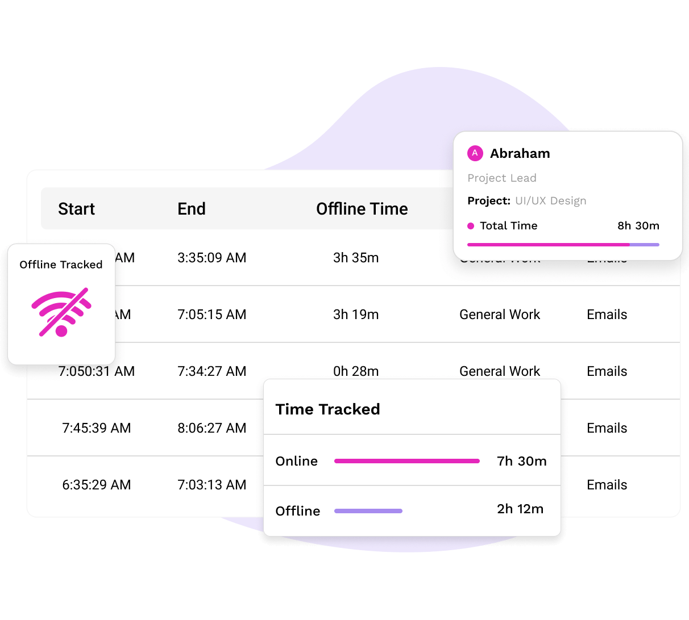
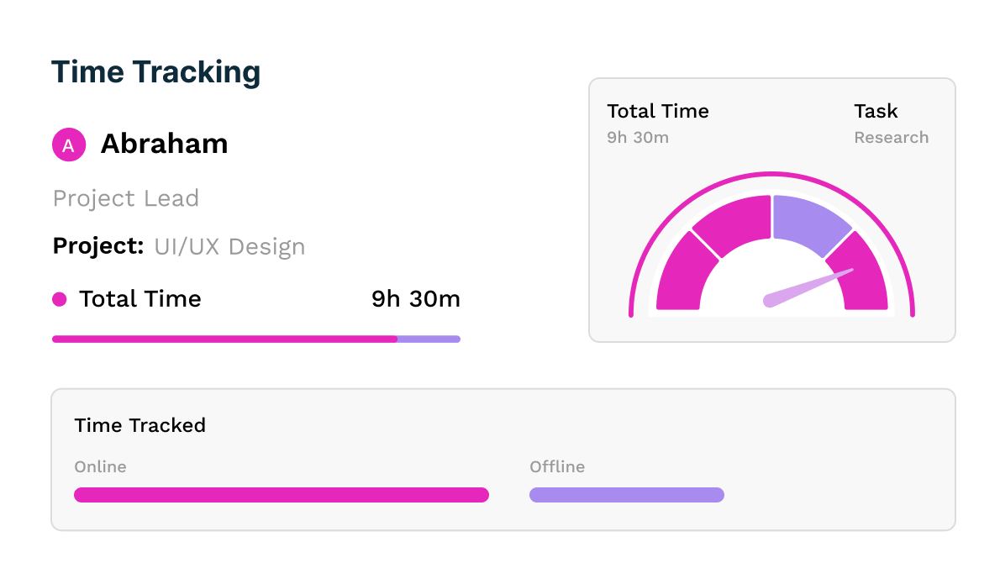
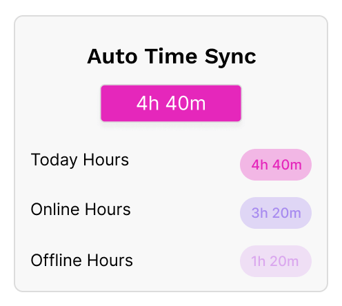
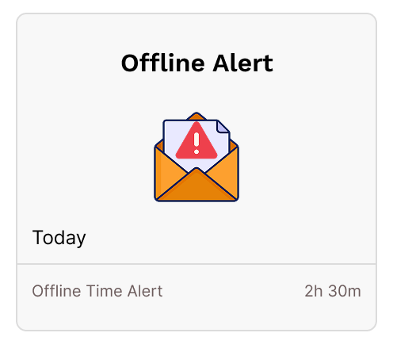
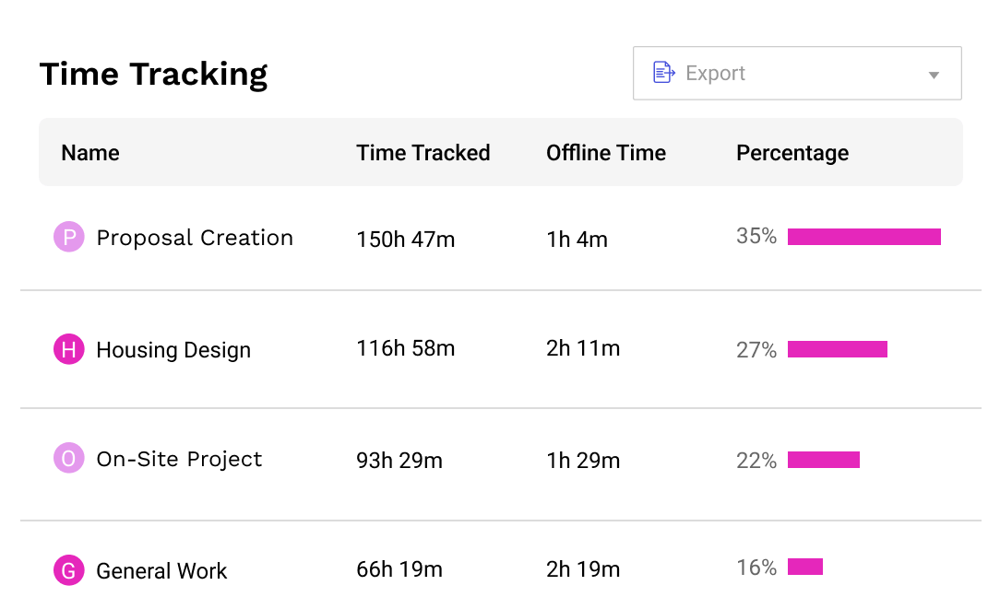
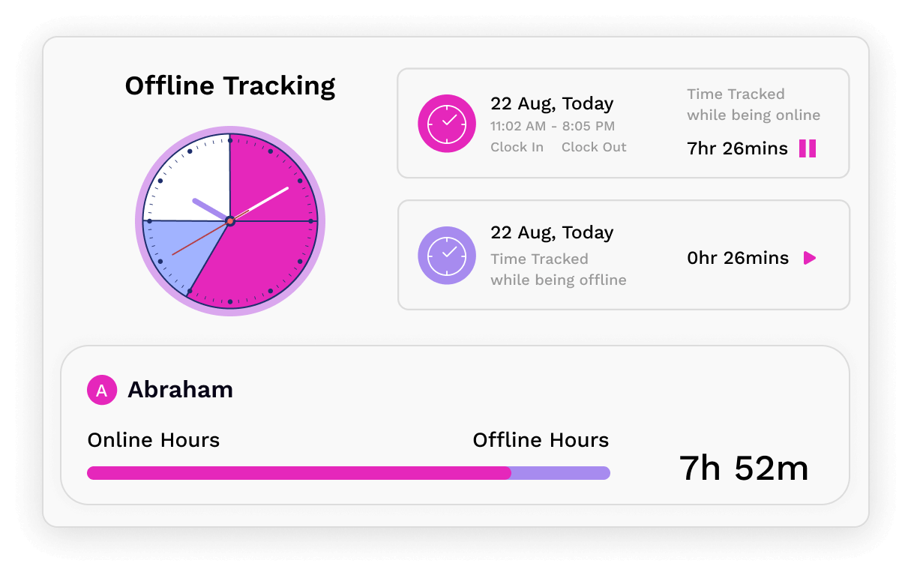
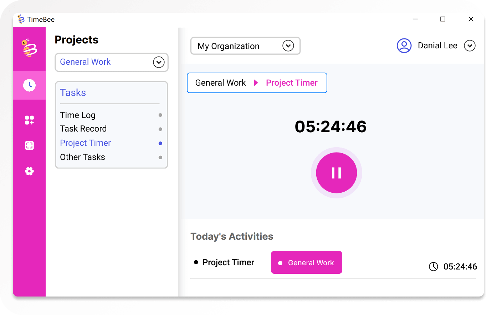

Best Offline Time Tracker
Globally-Trusted Offline Time Tracking Software
Keep your teams productive with reliable offline tracking.

Keep every minute accounted for – no matter the connection or conditions.
TimeBee allows time tracking without internet, ensuring no time is missed, regardless of the situation.

TimeBee syncs offline entries instantly once you are back online, so nothing gets lost or duplicated.

Get notified by email after 10 minutes offline and stay in control of your connection and productivity.

Accurately log time offline to keep your projects on track.
Stay connected to your workforce and their hours, no matter the connectivity.

Stay on task and record every minute with offline-ready features.

Track user activity through clicks and keystrokes with TimeBee offline time tracking software.
Monitor web and app usage to keep teams focused, backed by full offline tracking support.
Get detailed timelines that clearly indicate active and inactive periods during offline tracking.
Track time across projects and tasks offline with TimeBee to ensure every effort is recorded.
Capture screenshots during connection loss to maintain team focus and accountability offline.
Identify idle time instantly with continuous tracking that works online and offline without gaps.
Reliable time tracking and workforce management, wherever work happens.
Teams using TimeBee see a 42% increase in employees' productivity within the first 3 months.
Companies recover over 4 hours per employee per month, resulting in a 650% return on investment.
Managers observe a 54% increase in punctuality and fewer late logins after implementing TimeBee.
Time theft drops significantly as employees become more focused and accountable.
Never miss a billable hour again – TimeBee records every minute.

TimeBee continues tracking essential employee metrics even without an internet connection. While offline, it records activity levels such as mouse clicks and keystrokes, monitors web and app usage, logs time on projects and tasks, captures screenshots, detects idle time, and maintains accurate work timelines. All data is securely stored locally during offline periods and automatically synced once the internet connection is restored. This ensures complete visibility and accurate records without interruptions.